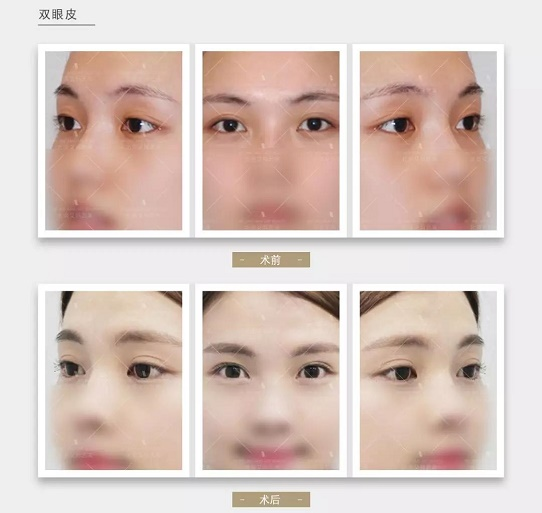

杭州保贝儿童医院怎么样 杭州小儿抽动症康复中心
2018-04-25 11:54:27 来源: 综合 作者:
杭州保贝儿童医院怎么样？杭州小儿抽动症康复中心！小儿抽动症是孩子较为容易患上的一种疾病，相信家长们对这个病多少也有一些了解，这种疾病对孩子的危害很大，严重影响到学习生活和人际交往等方面问题，那么究竟是什么原因造成的小儿抽动症呢？接下来就随小编来详细了解一下。
学习理论
开始时的抽动可能是出于条件性的逃避反应，如眼中有异物而眨眼，或学习其他人的某些生理缺陷或病态，后来由于外界的原因起到了增强作用，以致形成了习惯性抽动。
中枢神经递质失衡
目前大多数学者认为多发性抽动症存在着中枢神经递质失衡，多种中枢神经递质的异常在本病的发病过程中起着重要作用，基底神经节和相关结构中的各种神经递质的相互作用是非常复杂的，其中主要是与多巴胺、５－羟色胺和去甲肾上腺素等单胺类递质异常有关。最早发现多巴胺与多发性抽动症的发病有一定的关系，倾向于认为本病存在基底神经节纹状体的神经突触多巴胺活动过度及多巴胺受体超敏感。
躯体因素
杭州保贝儿童医院怎么样？杭州小儿抽动症康复中心！开始时往往由于局部刺激而产生抽动。如眼结合膜炎、倒睫刺激引起眨眼，鼻炎或上呼吸道感染而出现吸鼻、面肌抽动，上颌窦炎引起轻微的咳嗽，发出“吭、吭”声，当局部疾病因素去除后，抽动症状仍继续存在。营养达不到大脑功能的需求，如必需的氨基酸、牛黄酸、核苷酸、必需脂肪酸、卵磷脂、铁、锌等摄入量过少，就会影响脑功能，可能会造成或诱发抽动症。
遗传因素
小儿抽动症可能患有遗传现象。本病的家系成员中，抽动障碍的发生率为４０％～５０％。短暂性抽动障碍患儿家族成员中患抽动障碍较多见，临床观察发现家族中若有类似疾病者其发病年龄较早，症状较为明显，治疗效果比无家族史者差但迄今有关本病的致病基因尚无明确结论。
药源性因素
中枢神经兴奋剂如哌甲酯、抗精神病药的长期服用可能产生抽动症的不良反应。长期或大剂量应用中枢兴奋剂（如哌甲酯）、抗精神病药物（如氯氮平）、左旋多巴、卡马西平及氨茶碱等，均可能诱发多发性抽动症或使抽动症状加重。
体质因素
有小儿抽动症的患儿，一般不安静，对人对事较敏感，神经质，胆怯、多动、情绪不稳定、对人对事敏感及有固执倾向。并常合并一些心理性症状，如头痛、腹痛、不明原因的发热、便秘、哮喘、遗尿等。因此推测儿童抽动症与儿童本身的体质因素有关。
情绪因素
小儿抽动症这种疾病常与家庭有关，常见的因素如父母对患儿过高的学习要求，过多的责备，母亲常有神经质，精神上不安静。家庭的争执，父母离婚，亲人死亡；过多的干预使小儿发生情绪障碍，特别是焦虑和紧张等情绪，小儿抽动症即是心理上的矛盾冲突在运动系统方面的反应。此外，患儿曾有过运动活动遭受限制的历史有关。如父母对儿童安全过分担心或早年的某些疾病限制了儿童的活动。
通过上文的详细介绍，相信大家对小儿抽动症形成的原因也比较了解,在日常生活中，由于孩子的年龄比较小，经常会做一些危险的事情，因此家长们要多多注意，在孩子的成长过程中家长的细心呵护是必不可少的一环。
治疗小儿抽动症，首选杭州保贝儿童医院
杭州保贝儿童医院怎么样？杭州小儿抽动症康复中心！杭州保贝医院引进超前的国际医疗经营理念、与国际同步的较新设备和前沿技术，同时从国内外引进大批出色的医疗、护理和管理人才，充分实现软硬件国际化。
医院汇聚了一批在儿科各领域具有较高声望和获得过较高荣誉并具备丰富临床经验的专家、教授。平均临床经验２０年以上，患者信赖、好评无数。
国际儿科名院专家联合诊疗中心 为患儿提供“专家库”

２０１８年３月２５号，由北京儿科研究所附属儿童医院、全科医学平台牵头的国际儿科专家优质资源平台——国际儿科名院专家联合诊疗中心，在杭州保贝儿童医院落成。该诊疗中心由业内权威专家定期出诊，旨在建设“优质儿科医生资源平台”，为患儿提供“专家库”，方便患儿家长对症寻医，并给予个性化诊疗方案。
最后杭州保贝儿童医院真心地祝愿所有的家长都拥有一个幸福的家庭和一个健康的孩子。